BIND
Rabat, Morocco
Every callout on your relief. Tap a marker for the name, the slang and a view from that spot, or test yourself.
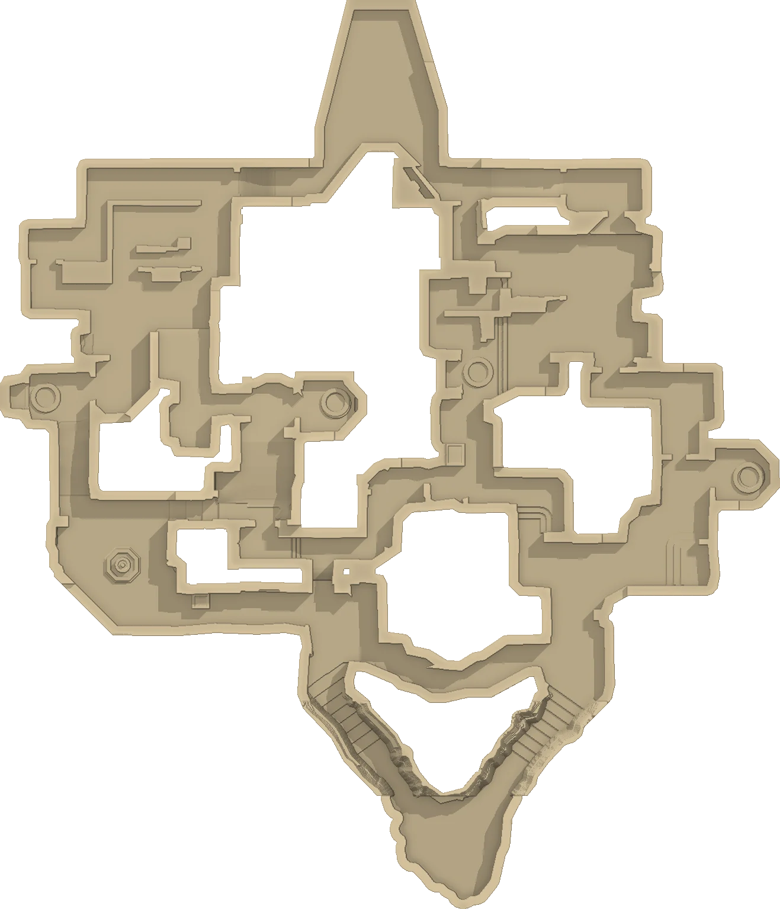
Where is
About Bind
- Release date
- April 7, 2020 – one of the three closed-beta maps
- Setting
- Rabat, Morocco – a sunny bazaar town
- Layout
- Two bomb sites and no Mid – just two ways into each site
- Special
- Two one-way teleporters: A Short takes you to B, B Long takes you to A
- Trivia
- Its code name in the game files is “Duality”
All VALORANT maps
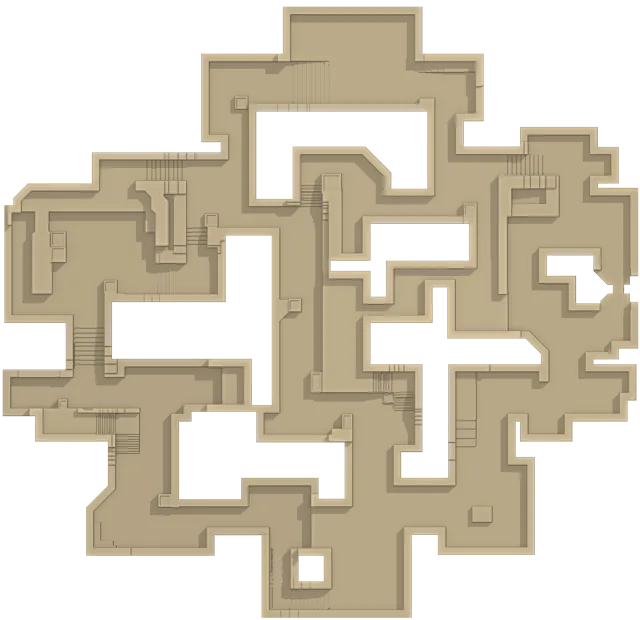
AbyssJan Mayen, Norway23 callouts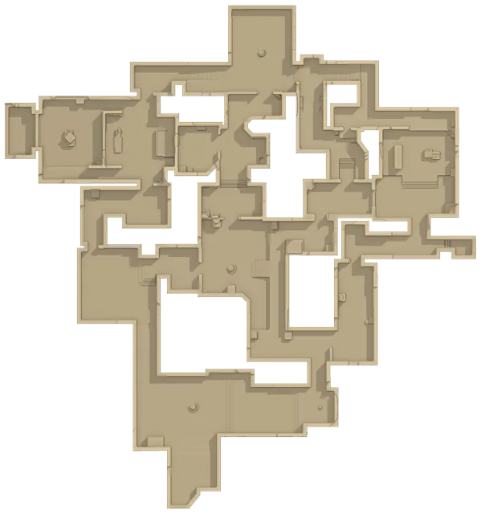
AscentVenice, Italy68 callouts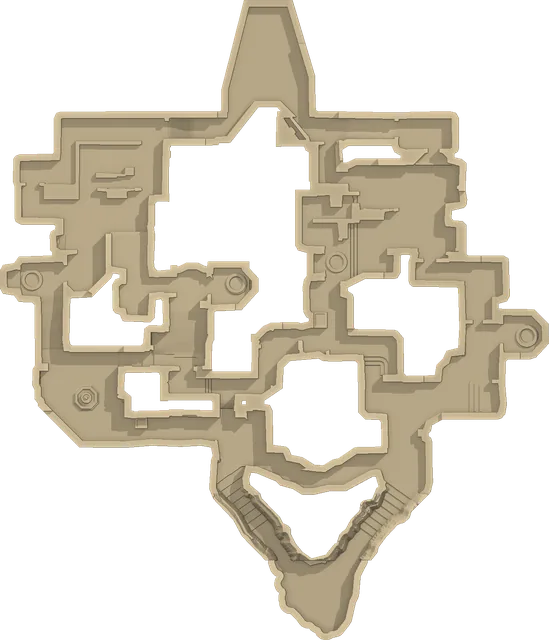
BindRabat, Morocco28 callouts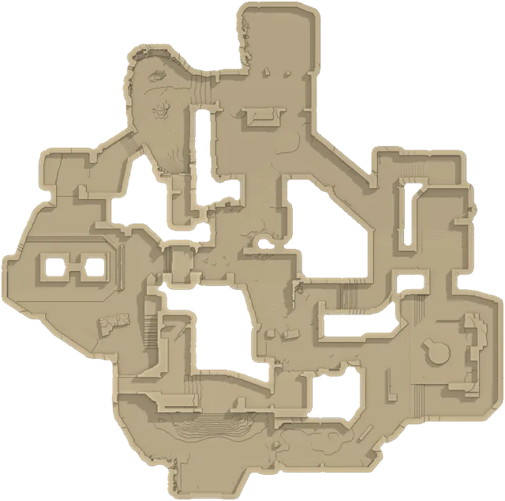
BreezeBermuda Triangle, Atlantic23 callouts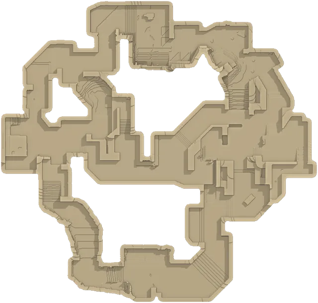
FractureNew Mexico, USA22 callouts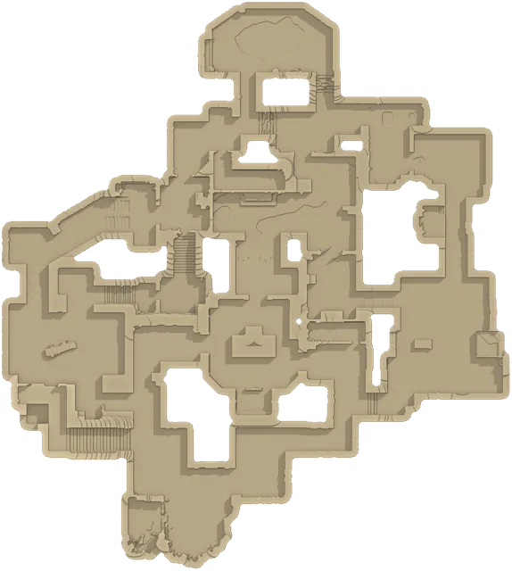
HavenThimphu, Bhutan29 callouts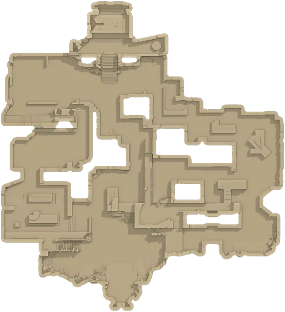
IceboxBennett Island, Russia25 callouts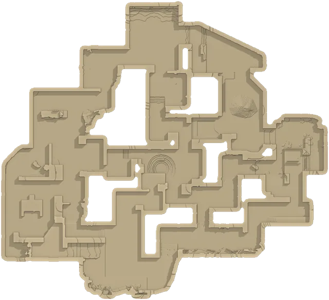
LotusWestern Ghats, India28 callouts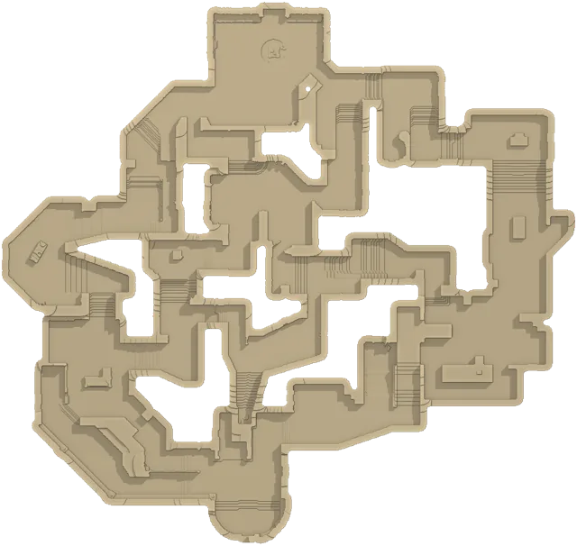
PearlLisbon, Portugal26 callouts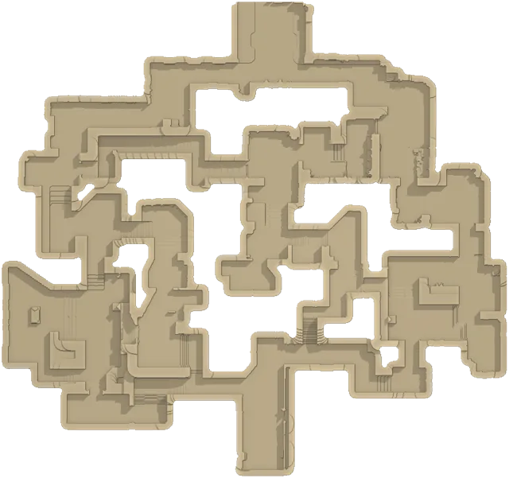
SplitTokyo, Japan24 callouts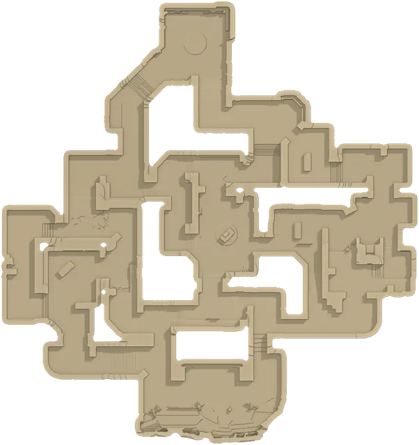
SunsetLos Angeles, USA17 callouts